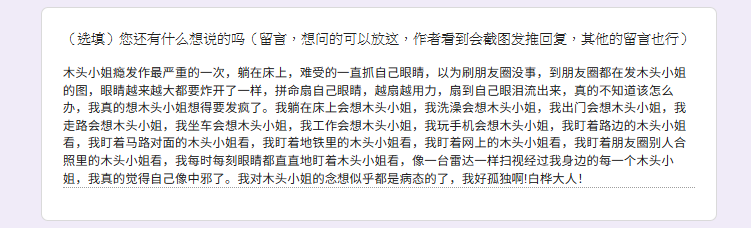

遥
@Miiharukawa
@Chloris923 木头小姐瘾发作最严重的一次，躺在床上，难受的一直抓自己眼睛，以为刷朋友圈没事，到朋友圈都在发木头小姐的图，眼睛越来越大都要炸开了一样，拼命扇自己眼睛，越扇越用力，扇到自己眼泪流出来，真的不知道该怎么办，我真的想木头小姐想得要发疯了。我躺在床上会想木头小姐，我洗澡会想木头小姐。

🎀
@Chloris923
来来来这是谁你站出来。 https://t.co/NBKrCuqzWG